Paper flowers are one of those crafts that never get old. Whether you grab a single sheet of construction paper or a handful of colorful tissue squares, the result is always something pretty, personal, and genuinely fun to make together. 🌸
This list brings together 20 of our favorite paper flower craft ideas for kids of all ages. Some take just 15 minutes, others are a leisurely afternoon project. All of them are beginner-friendly, low-mess, and perfect for any time you want a sweet creative moment with your child.
What You'll Need
Most of these paper flower craft ideas use the same handful of supplies, so stocking up once will cover you for the whole list. ✂️
- Colored Construction Paper, a large assorted pack gives you every petal color you could want.
- Tissue Paper Sheets, in assorted colors, for soft and fluffy flower varieties.
- Pipe Cleaners, great for stems and adding a flexible, shapeable structure to flowers.
- Elmer's Glue Sticks, washable and easy for little hands to control without the mess.
- Basket Coffee Filters, the secret ingredient for gorgeous ruffled paper blooms.
- Child-safe scissors, for cutting petals, stems, and leaf shapes.
- Watercolor paints or washable markers, for coloring coffee filters and adding detail.
- Cupcake liners, standard or mini, for quick daffodil and peony-style flowers.
20 Paper Flower Craft Ideas to Bloom With Your Kids
1. Accordion Fold Paper Flower
Take a long sheet of colorful paper and accordion-fold it into narrow pleats from end to end, then pinch the center and fan the pleats outward to form a full round bloom. Secure the center with a pipe cleaner twisted into a stem. Kids of all ages love the satisfying way the flat strip transforms into a flower in seconds. This is one of the most popular paper flower craft ideas because the result looks impressive with almost no cutting involved.
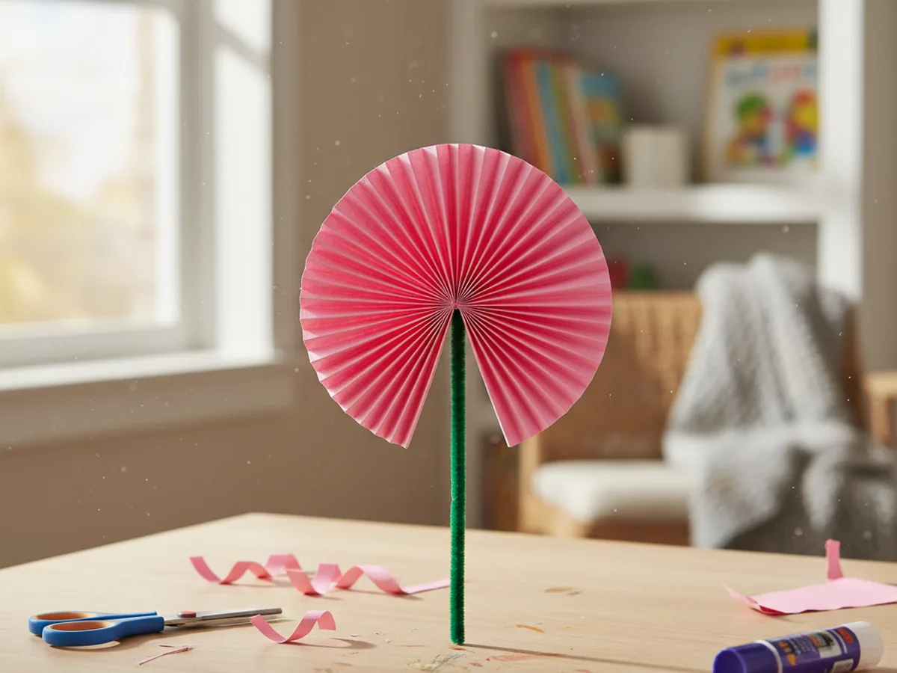
2. Tissue Paper Pom Pom Flower
Stack several sheets of tissue paper on top of each other, accordion-fold the entire stack together, then fold in half and tie the center with a pipe cleaner. Gently pull each individual tissue layer upward and outward to create a full, fluffy pom pom bloom. These look gorgeous as bouquets or as party table centerpieces. Among easy paper flower craft ideas, this one delivers one of the biggest visual payoffs for the effort involved.
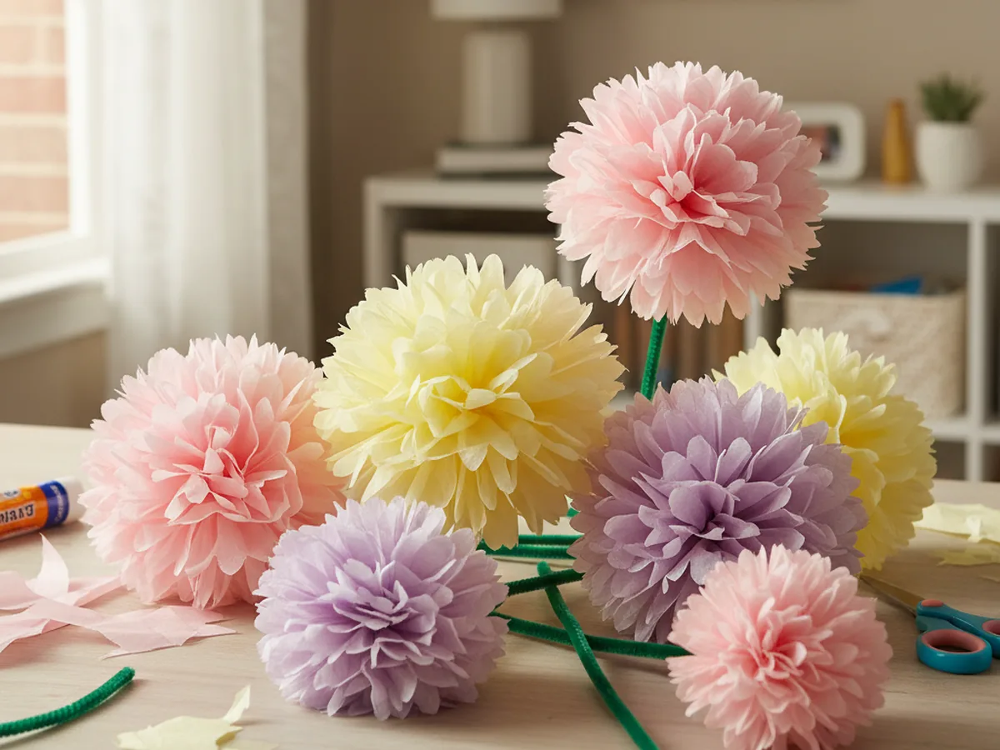
3. Coffee Filter Flower
Flatten a basket-style coffee filter and let your child paint or color it with watercolors or diluted markers, then let it dry completely before pinching the center and wrapping a green pipe cleaner around the base for a stem. The filter soaks up the paint beautifully and creates a soft, watercolor bloom that looks almost delicate. This is a wonderful paper flower craft idea for kids who love painting but find plain paper too small to work with.
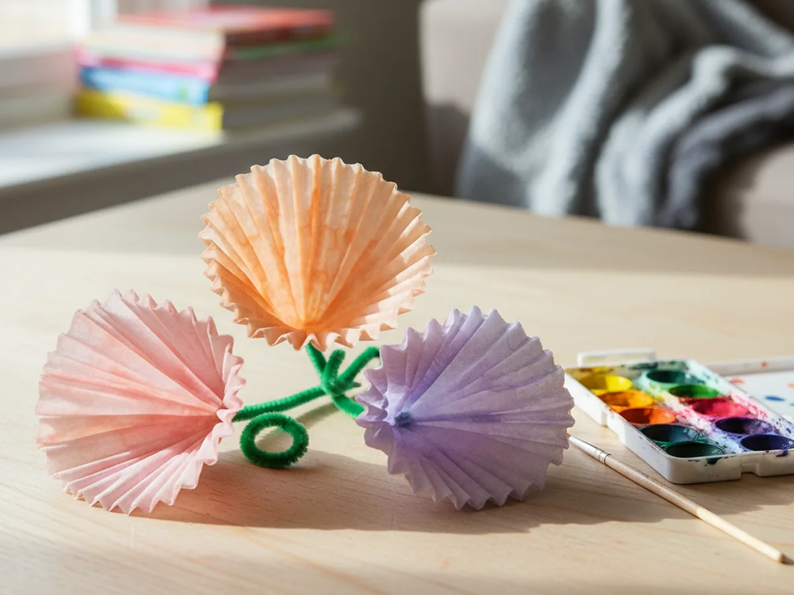
4. Paper Plate Sunflower
Paint a paper plate yellow and let it dry, then cut long petal shapes from yellow construction paper and glue them all the way around the rim. Fill the center circle with torn brown paper scraps or brown paint to complete the sunflower look. Mount it on a green paper strip stem with two leaf cutouts for a display-worthy bloom. Kids who have trouble cutting petals freehand can use a strip of yellow paper with one fringed edge for an equally cheerful result.
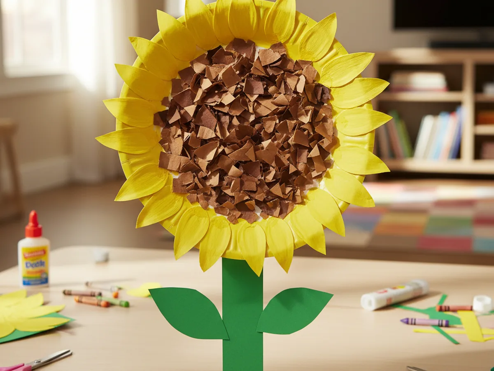
5. Cupcake Liner Daffodil
Flatten a yellow or orange cupcake liner and cut small triangle notches all around the edge to form petals, then push a second smaller liner through the center and fluff it up to create the classic trumpet shape of a daffodil. Glue the whole flower onto a green paper stem. This paper flower craft idea works beautifully with mini liners too, and younger toddlers can help by placing the flowers into a paper vase drawing while an older sibling handles the cutting.
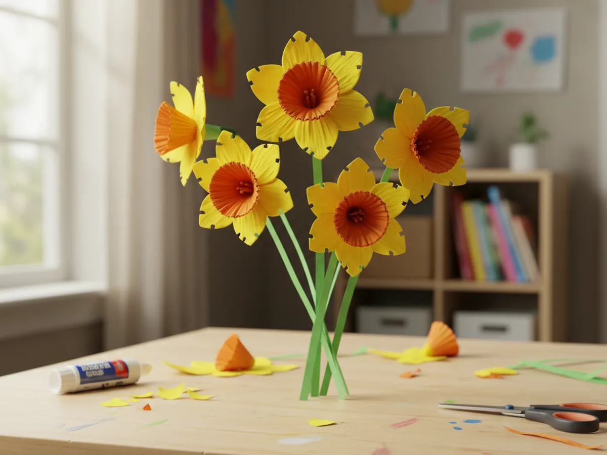
6. Toilet Paper Roll Tulip
Pinch the top of an empty toilet paper roll at two opposite sides and fold the ends inward to form a rounded tulip shape at the top, then paint or wrap the whole roll in colored paper for the bloom. Glue a wide green paper strip below the tulip as a stem. Group several finished tulips in a mason jar for an adorable handmade bouquet. This is one of the most satisfying recycled paper flower craft ideas because the roll shape does most of the work for you.
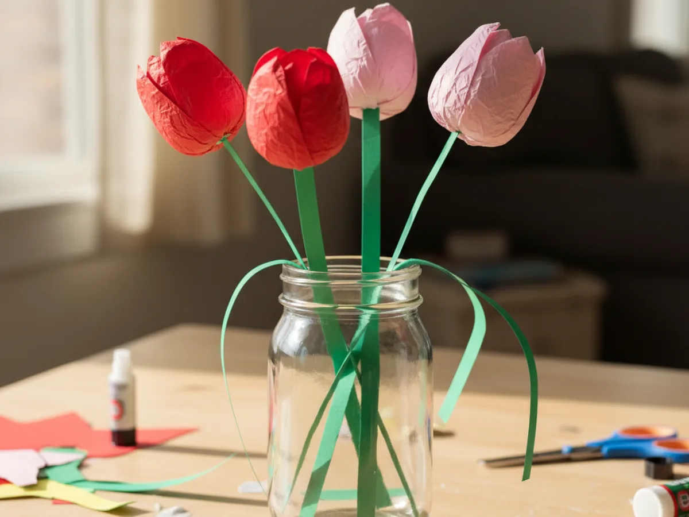
7. Paper Strip Spiral Rose
Cut a long spiral strip from a single square of red or pink paper, starting from the outside edge and working inward toward the center, leaving a small circle at the base. Roll the spiral loosely from the outermost end inward, then release it gently and glue the base circle underneath to hold the rose shape in place. The finished rose looks surprisingly realistic and elegant. Older kids especially love discovering that a simple flat square can become a three-dimensional bloom.
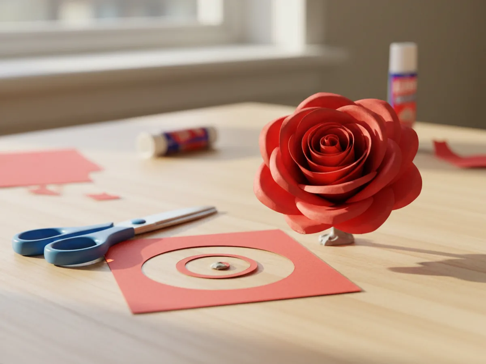
8. Origami Tulip
Fold a square piece of paper using the classic origami tulip method, bringing the bottom corners up to form the bloom, then fold the top flap down to open the flower and puff it gently from below to give it shape. Pair it with an origami stem and leaf for a fully paper flower that stands upright without any glue. This is one of the most rewarding paper flower craft ideas for kids who are ready for a light folding challenge around age six and up.
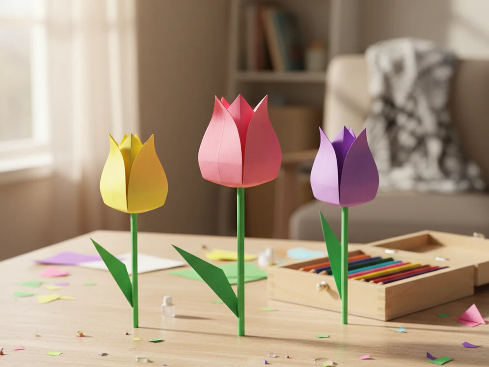
9. Crepe Paper Carnation
Cut several circles from crepe paper and stack them together, then fold the stack in half and half again. Cut rounded petal shapes through all layers before carefully unfolding and separating each layer, then scrunch and fluff the petals upward one by one to create the layered ruffled look of a real carnation. Twist a green pipe cleaner through the center as a stem. These look beautiful in a little vase and make wonderful Mother's Day gifts. 🌺
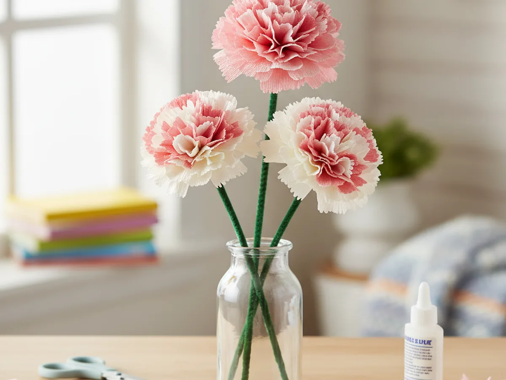
10. Construction Paper Daisy
Cut a large yellow or white circle for the center and then cut eight to ten long oval petal shapes from a contrasting color, gluing them evenly around the back of the circle so they radiate outward like a real daisy. Add a green strip stem and a couple of simple leaf cutouts. This is one of the most beginner-friendly paper flower craft ideas on the list because the shapes are basic and forgiving, making it easy for kids as young as three to get involved in the cutting and gluing.
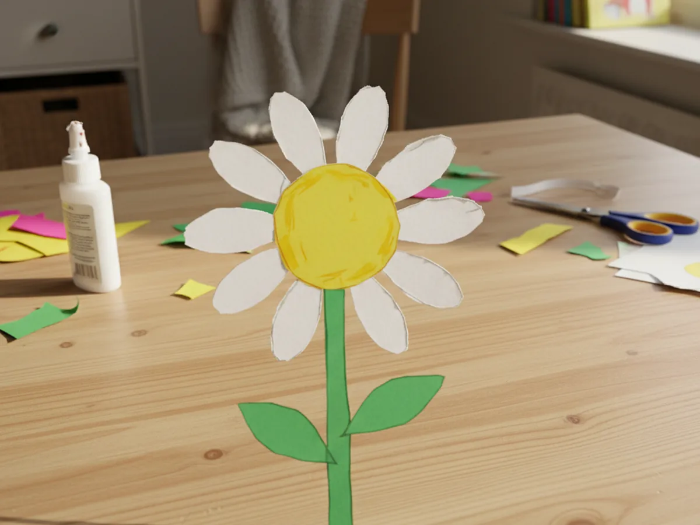
11. Paper Fan Flower
Accordion-fold two identical sheets of colored paper and staple or tape the two folded strips together at one end, then fan them open and join the other ends to create a full round flower shape. Add a small contrasting circle to the center for a polished finish. Make several in different colors and string them together as a garland or display them as wall art. This is one of those paper flower craft ideas that young kids find endlessly repeatable because each new color combination feels completely fresh.
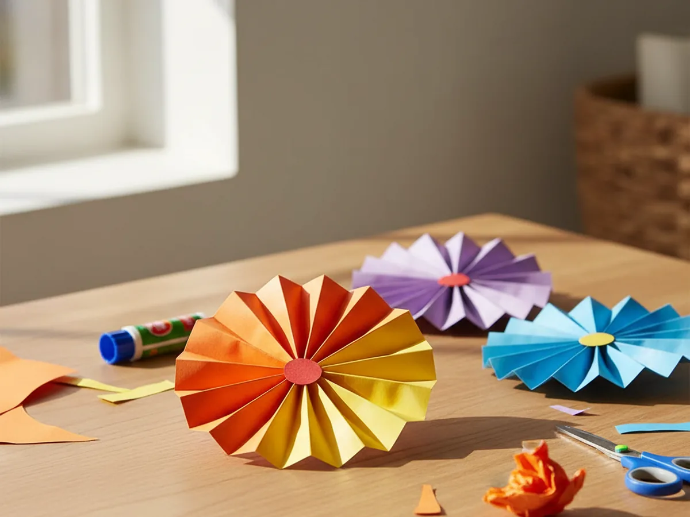
12. Paper Loop Flower Wreath
Cut strips of colorful paper and form each one into a small loop by gluing the ends together, then arrange the loops in a circular cluster around a paper circle center to form a single flower. Make twenty or more individual flowers and glue them onto a large cardstock ring to create a cheerful paper wreath. Hang it on a door or wall for a lasting seasonal decoration. A big wreath project like this is ideal for rainy days when you have plenty of time to create together.
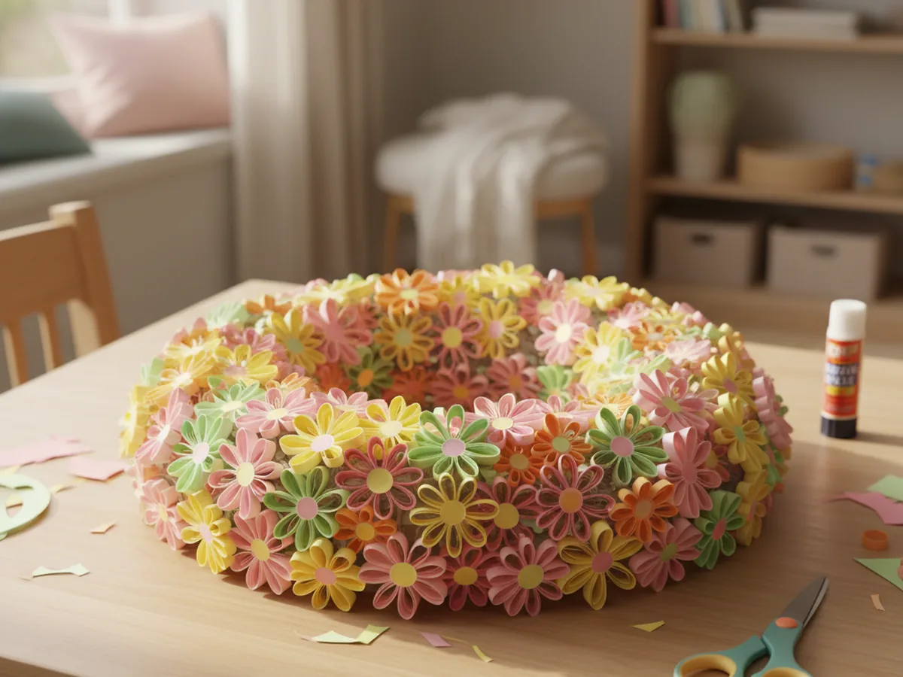
13. Wax Paper Flower Suncatcher
Place small tissue paper squares in a flower arrangement directly onto a sheet of wax paper, then lay a second sheet of wax paper on top and press the two sheets together with a warm iron to seal the tissue inside. Cut the sealed panel into a flower shape and tape it to a sunny window. Light shines through the tissue and creates a glowing stained glass effect. This is one of the most visually stunning paper flower craft ideas on this list, with adults handling the iron while kids arrange the tissue pieces.
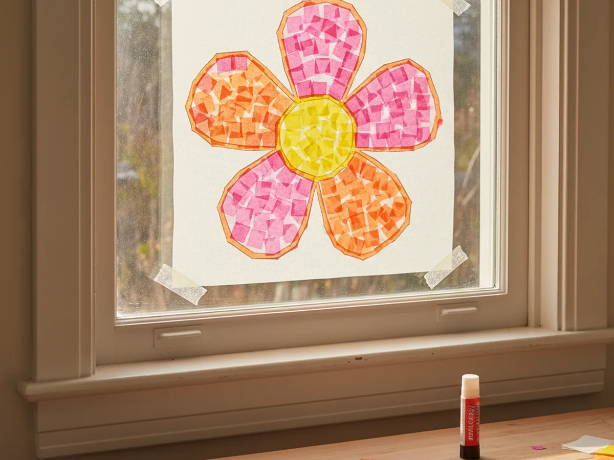
14. Paper Heart Petal Flower
Cut several heart shapes from pink or red paper, all the same size, and arrange them in a circle with the pointed tips touching at the center, gluing each heart flat so the rounded tops face outward as petals. Add a small yellow circle to cover the center points for a clean finished look, then mount the flower on a green stem strip. Kids who have just learned to cut heart shapes love seeing those simple hearts become something new. This makes a sweet Valentine's Day or Mother's Day gift too.
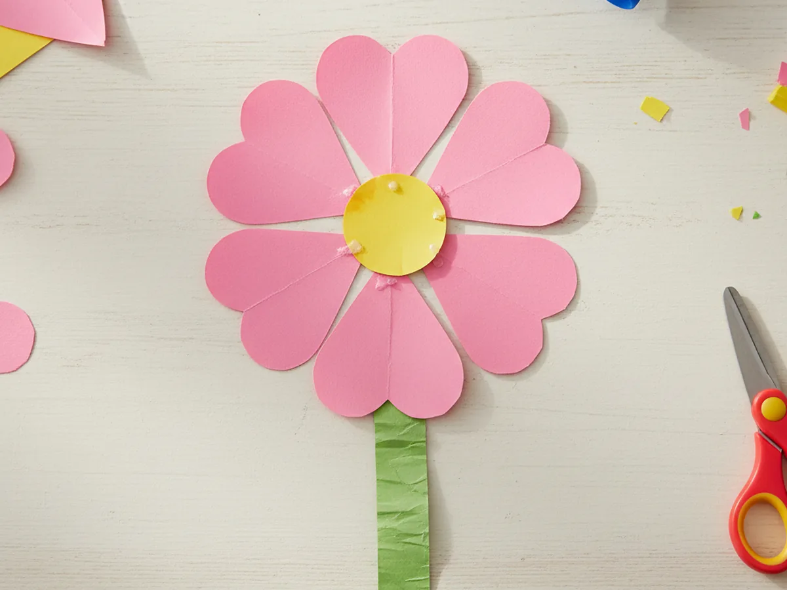
15. Paper Pinwheel Flower
Cut a square of paper and make four diagonal cuts from the corners toward the center, stopping before you reach the middle, then fold every other point up to the center and secure all four tips together with a brad or a small glue dot. Mount the finished pinwheel on a straw with a bead between the pinwheel and the straw so it spins freely in any breeze. This is one of those paper flower craft ideas that doubles as an outdoor toy, which makes it especially exciting for kids to make and take outside.
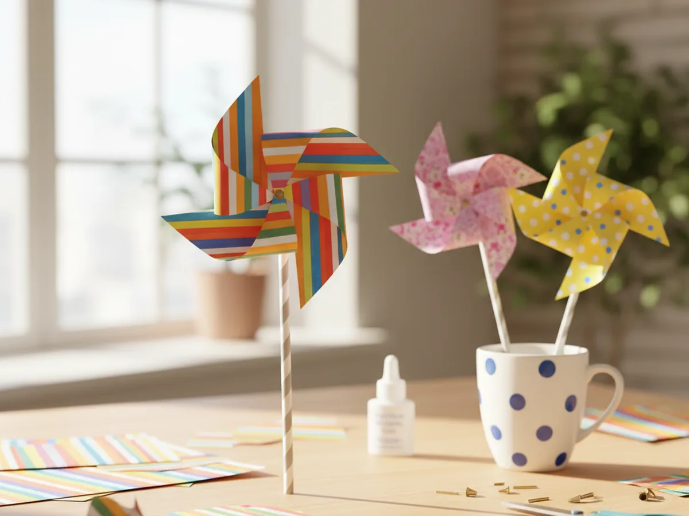
16. Egg Carton Flower
Cut individual cups from a cardboard egg carton and trim the edges into petal shapes all the way around, then paint each cup in a bright flower color and let it dry completely. Poke a pipe cleaner through the base to form a stem and add a small yellow pom pom or paper circle to the center. Group several finished egg carton flowers together in a bundle for a dimensional garden display. The sculptural quality of this craft gives it a look that stands out beautifully among flat paper projects.
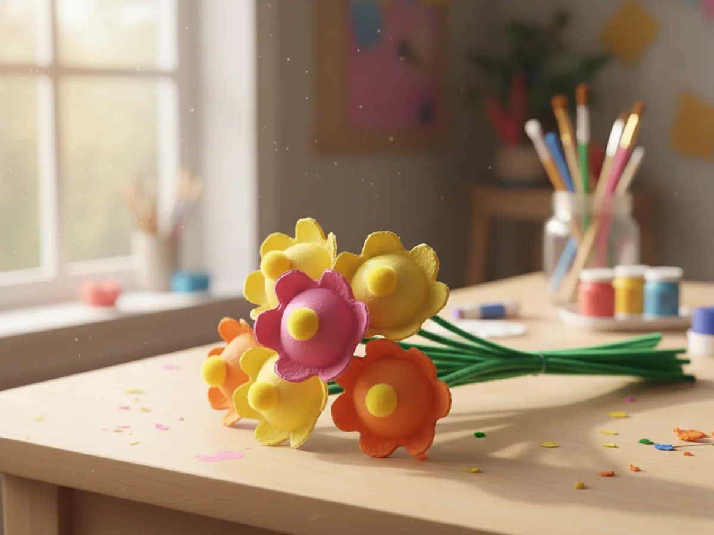
17. Paper Mosaic Flower Card
Draw or trace a simple flower outline on a piece of white cardstock, then fill the petals and center with small squares of torn or cut colored paper glued closely together to create a mosaic effect. The finished flower card looks colorful, detailed, and completely handmade in the best way. This is one of the more relaxed paper flower craft ideas because there is no precise cutting involved and kids can work at their own pace, adding pieces whenever they feel like it.
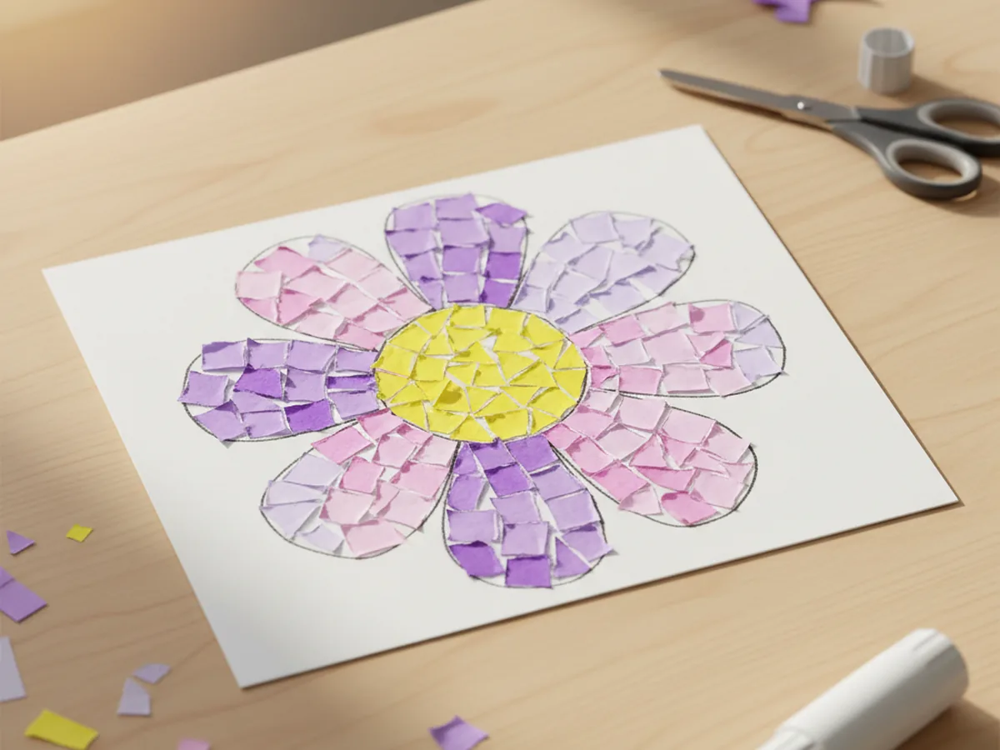
18. Paper Straw Flower
Cut a paper straw into short segments and arrange them in a flower pattern on a contrasting paper background, radiating outward from a central circle of segments to form the petals and then the center. Glue everything down flat and add a green paper stem below the straw flower shape. The hollow ends of the straws give the petals a fascinating geometric look that feels very different from standard paper cutting projects. Younger kids can help place the straw pieces while an older sibling handles the arrangement.
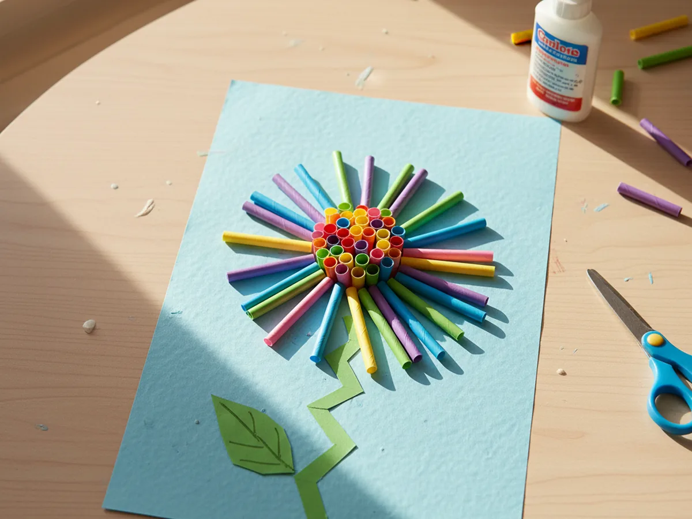
19. Paper Chain Flower Garland
Make a series of small paper loop flowers and connect them into a long garland by threading a length of ribbon or a paper strip chain between each bloom. Mix several flower sizes and colors for the most cheerful effect. Hang the garland across a mantle, a window, or a bedroom wall for a decoration the whole family will admire. This project works especially well as a team effort where one child makes flowers while another assembles the chain, and it is the kind of paper flower craft idea that fills a whole happy afternoon.
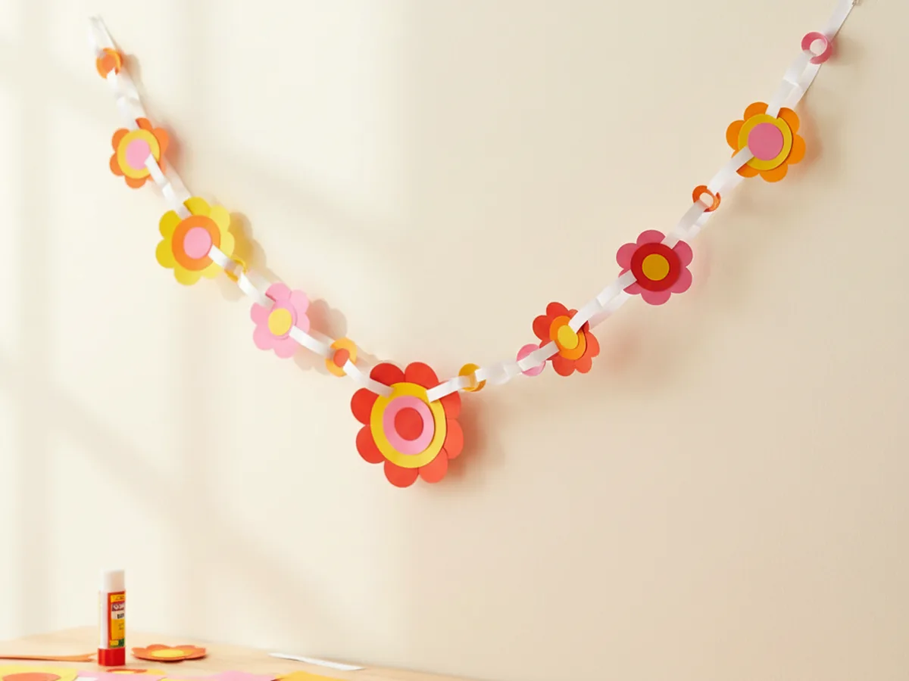
20. Paper Bag Flower Bouquet
Cut several simple flower shapes from colored paper and attach each one to a green paper strip stem, then gather all the finished flowers into a small paper bag decorated with markers or stickers. Fluff the flower heads above the bag opening to create a finished bouquet that looks genuinely gift-worthy. This is the perfect final idea for a paper flower craft ideas session because kids end up with a complete handmade gift they can deliver to someone they love. The act of giving something they made always makes the craft feel even more worthwhile. 💐
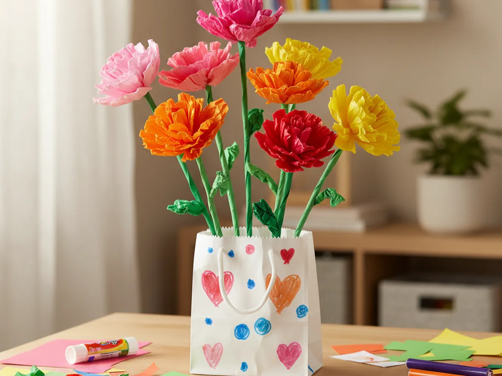
Final Thoughts
There is something quietly wonderful about watching a child realize that a flat sheet of paper can become a full, dimensional flower in just a few folds and snips. These paper flower craft ideas cover every skill level and every time window, from quick 15-minute blooms to longer projects that fill a whole afternoon with creative energy. You do not need a craft room or a big supply budget to make them work, just some colored paper, a little patience, and a child who is ready to create something beautiful with you.
Pick one idea that feels right for today and enjoy every step together.
More Crafts You'll Love
If paper flowers are your thing, these two articles have even more ideas to explore together.
Happy crafting with your little one!